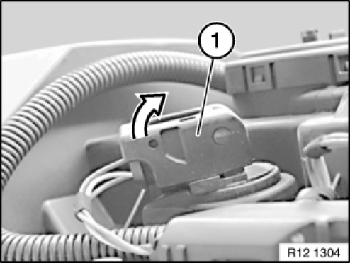
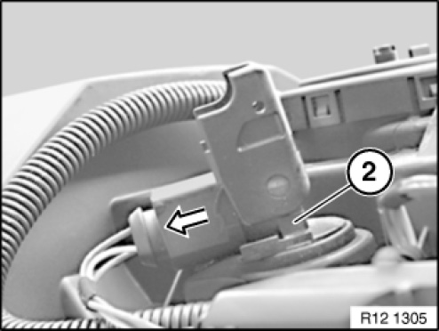
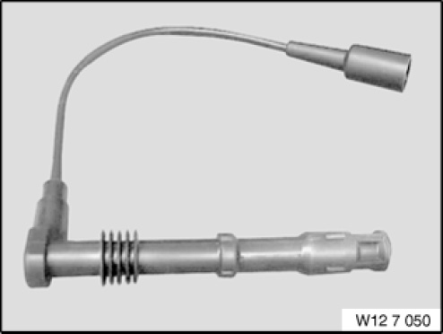
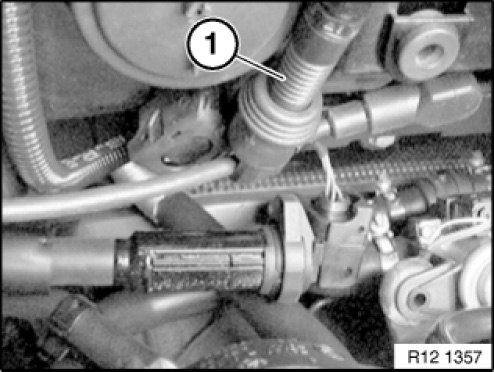
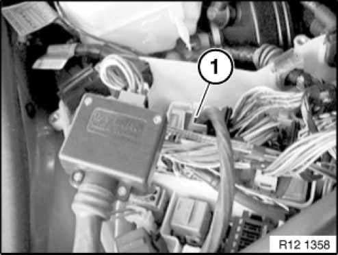
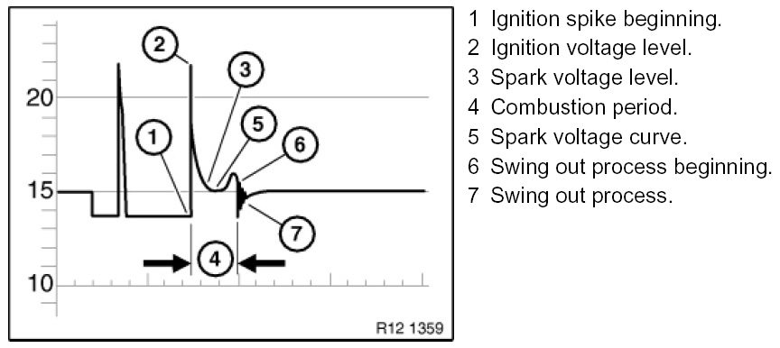
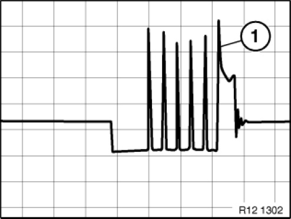

12 13 009 Check Ignition Pencil Coils With Diagnosis and Information System Tester or Oscilloscope
12 13 009 Check ignition pencil coils with diagnosis and information system tester or oscilloscope (M54, M56, N40, N42, N43, N45, N46, N52, N62, N62TU, N73)
Special tools required:

Necessary preliminary tasks:
- Read out fault memory in the DME (Digital Motor Electronics)
- N40: Remove sound absorption hood
- N42: Remove sound absorption hood
- N43: Remove sound absorption hood
- N45: Remove sound absorption hood
- N46: Remove sound absorption hood
- N52: Remove sound absorption hood
- N62/N62TU: Remove sound absorption hood
- N62/N62TU: Remove ignition coil cover
Open Control unit box
- M54/56 Remove ignition coil cover

Unlock plug fastener (1) of ignition coil.

Pull off connector (1) in direction of arrow.
Pull ignition coil (2) up and out.
NOTE: Procedure is valid for all pencil ignition coils

Install special tool 12 7 050 .
Installation note:
The special tool 12 7 050 is connected between spark plug and pencil ignition coil.

Secondary measurement:
Clamp KV pliers (1) of diagnosis and information system tester onto special tool 12 7 050.
Diagnosis and information system tester procedure:
- Select (measuring technique).
- Select (preset measurement).
- Select (secondary ignition signal).
- Connect (TD cable to diagnostic head).
- Select (static ignition distribution).
- Select (number of cylinders).
Further procedures according to DIS instructions.
NOTE: Graphic shows: KV pliers (1) US version.

Primary measurement:
Connect 26-pin box with special tool 12 1 301 to connector (1) DME module 5.
Diagnosis and information system tester procedure:
- Select (measuring technique).
- Select (preset measurement).
- Select (ignition signal Kl.1).
Further procedures according to DIS instructions.
NOTE:
Pin assignment according to wiring diagram
Graphic N42.
IMPORTANT: Ignition signal is a Multi spark ignition.


M54 / M56 / N40 / N42 / N45 / N46 / N62 / N73:
For engines with multi spark ignition starting from production April 2001, the following ignition oscillogram applies:
Depending on engine temperature (approx.-20° to 100°) and engine speed (less than 2000 rpm), a number of ignition voltage spikes can appear (approx. 1-5 ignition spikes) before the normal ignition voltage process.
The additional ignition spikes do not affect the diagnosis.
The last ignition spike (1) on the oscillogram is decisive.

NOTE:
The ignition voltage spike displayed is approx. 20-25% lower than the real value.
Important is not the height of the ignition voltage spike but the evenness of all cylinders.
Differences from 3000 to 4000 volts are permissible.